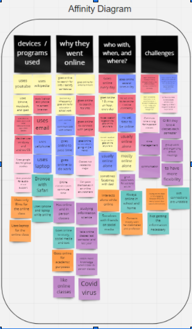
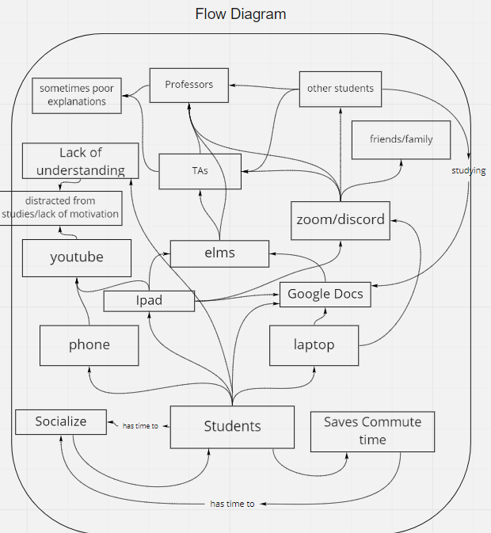

Research
Project by John Lloyde Rayela, Victoria Nathaniel, Zehra Patwary, and Chris Summers
Interview and Observation Process
To prepare for interviewing and observation sessions, we first came together as a group to think of some potential questions to ask during interviews. We wrote these down in our shared planning document, and then decided how we would divide the work. Each group member would conduct at least one interview with someone from our user group, a UMD student, while two group members would conduct an extra interview with another stakeholder, in this case a TA or Professor. Finally, we each agreed to do at least 25 minutes of field observation as well as each take one or two pictures and create a field sketch.

Data Collection
We used contextual inquiry to understand the daily activities of a user and how they use the online platform as compared to attending classes in-person. By learning about their lifestyle, we can understand why they use certain technologies the way they do and what are some of the challenges they may face. It allows the users to recall certain events that help them in explaining their activities. We also used interpretation by clarifying certain points they mention to better grasp what they were saying. Identity is also used because one of the users said they keep themselves motivated by taking snack breaks or taking naps throughout the day.

Affinity Diagramming
To build our affinity diagram, first we made a new board in Miro, then we made sticky notes for every idea we gained during our interview and observation phase. After looking at all the sticky notes, we decided on 4 main topics to include in the affinity diagram. These topics are the devices and programs users used, why users went online, when, where, and with whom users went online, and finally the main challenges users faced when getting online. We then copied the sticky notes from the basic observation section into the affinity diagram under the appropriate category.
Flow Diagram
Our main stakeholders are TAs and Professors at UMD. Some of the tools and systems they use to do their work are personal and campus computers, email, zoom, discord, slack, and other video conferencing software. Their main responsibilities are to help enable their students to learn course content and to assess student progress in learning course content.
